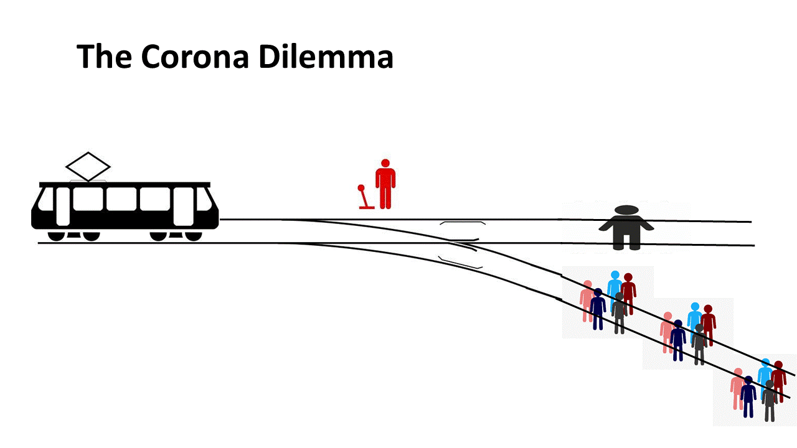

[in progress: will add more references, links and latest numbers when I get the time]
In this note, I want to deal with three related issues: the main lessons on the corona virus from the reported deaths across countries with different policies; the feasibility of different “end games” relevant to this pandemic, including vaccines and herd immunity; and some key WELLBY numbers relating to loneliness, unemployment, and how government expenditures link to lives saved. Armed with these numbers you can generate your own estimates for how various policy scenarios change the numbers of happy lives lived by the population.
The take-away message is that I think most European countries will end up with a "Sweden, perhaps on steroids" strategy, openly adopt a not-much-to-truly-fear narrative, and that the key wellbeing consideration for the next two years will be jobs and social closeness. We will then also hopefully acknowledge as Westerners what the awful and totally predictable costs have been in the rest of the world of our attitudes and policies in dealing with this virus.

The dangers of the corona virus: on New York, Sweden, South Korea, and herd immunity.
In February / March, when many key policy decisions had to be made, it was still possible for a reasonable person to think more than 1% of the whole world would die if one didn’t lock down the majority of the population. With the benefit of all the research and information of the last 2 months, we now know much better what the risks are and what matters in terms of policies. The key information that is new is how many victims the corona virus has made in different countries following different strategies and with different circumstances. Though there are huge statistical issues with this data, including the fact that some countries are more strict than others when counting a death as covid related, and the large differences in just what part of the population was exposed, we can nevertheless turn to this data to help see the main contours.
One clear lesson is that death tolls have been highest in dense urban areas, and very low in rural and (sub)tropical areas, particularly in countries where infectious diseases are a very normal cause of death. In the dense cities, transmission rates are much higher than in other areas, and so a much higher percentage of the population is infected until some kind of herd immunity is achieved (which is basically when residual transmission rates are low, ie the “rho<1”).
The worst affected large region in the world is thus New York, with a death toll of around 0.15%, which is easily ten times higher than that of rural areas in the US. Importantly, the US basically let the virus roam around unhindered for over a month, which was long enough to spread all over New York, pretty much a worst case scenario. The latest estimates suggest there are several neighborhoods in New York that have over 40% of the population with observed anti-bodies. Since it takes a few weeks after infection to get anti-bodies and the reported numbers always related to measurements of several weeks ago, this means many areas of New York must at this moment be pretty close to herd immunity levels.
We don’t quite know why (sub)tropical areas have such low death rates, but its probably a combination of weather (the virus doesn’t like the sun), natural circulation in houses preventing the aerosols that carry the virus from hanging around, high humidity that prevents the contagious aerosols from hanging around, population density, and perhaps the fact that in most (sub)tropical areas, infectious diseases are plentiful and a very prevalent health hazard. Rich populations have dry inside places where it is far easier to catch the virus, and perhaps are not so used to infectious diseases. So it is a rich man's disease where, for once, slum dwellers in poor countries are at the advantage. Having said that, within rich countries, its the poor who are most at risk.
In places like Vietnam, Thailand, the Indian countryside, South Asia, and Africa, total death rates from corona are thus below 0.01%.
We now also have a much better idea "what it takes" to get natural herd immunity because of Sweden. The Swedish ambassador to the UN claimed Sweden is now close to herd immunity, with more than 30% of people in its capital already immune by late April. It has a current death toll of around 0.035% and should thus be expected to have achieved herd immunity for a finalised death toll of around 0.05% (their death rates are well on the way down now). These numbers are of course not uncontested, with later research suggesting only 20% immunity in Stockholm by late May, whilst yet others think the immunity levels are far higher because the main immunity tests miss groups of people who are immune by having had similar diseases in the past or some genetic disposition. Still, these lower-than expected number might mean Sweden will have a death toll of 0.1% before it reaches herd immunity level, half of what New York seems to be heading for to get that outcome.
Relevantly, Sweden has a population density still higher than Australia, also has cities with lots of space, inside dry places, and has in previous decades also marginalised most other infectious diseases. So its reasonable to expect that Australia too could achieve herd immunity with a loss no higher than 0.05% to 0.1% of the population, ie 10,000 to 20,000 people. Ditto for other Western countries: one in thousand seems the maximum one "has to suffer" to get herd immunity, probably quite a bit less.
There are a few other lessons one can draw from the experience of other countries, though one should bear in mind that the international statistics have to be read with caution as different countries have totally different rules on whom to count as a corona death, which can easily lead to a factor of 5 difference in claimed deaths.
One lesson is that lock downs have had remarkably little benefit in preventing deaths in Europe. Their main failing is that they didn’t manage to truly shield the elderly and vulnerable population, possibly even the opposite: the vulnerable elderly who rightly had something to fear were those with lots of other health problems and in retirement/nursing homes. Their continuing need for help brought them into contact with infected elderly and infected health workers, thus spreading the virus precisely among the vulnerable population.
Lock downs were quite probably worse than asking their families to take them in for a month, and probably worse also than having the virus spread quickly among the healthy population so that the health workers would much sooner be in a herd immunity situation. Paradoxically, the lock downs prevented herd immunity among large groups which meant more health workers kept being infected, with hospitals and retirement/nursing homes some of the worst places one could be.
Now of course, smart lock downs can prevent this. The UK in that sense is the shining example of the worst of all worlds: economic and social devastation due to the lock downs, whilst the truly vulnerable population was not protected at all. Sick elderly patients were sent back to their nursing/retirement homes and infected hospitals and health workers helped spread the virus among the very group that truly had something to fear.
So it is now clear that blanket lock downs are a terrible idea and prevent few deaths, probably even causing corona deaths depending on various policy particulars.
Another lesson is that one should not see a country as a single herd, but as being made up of lots of different communities that have their own infection rates, vulnerabilities, and thus threshold levels of infection before herd immunity is hit.
The most useful way to see the issue of herd immunity is to realise that our societies have both places where there is a lot more interaction, as well as people that do a lot more interacting. Cities have high interaction rates, but there are also groups of workers and individuals that do a lot of traveling and interacting. Nurses for instance do a lot of interacting with different groups, and are highly efficient carriers of viruses since they will often be non-symptomatic. Traveling salesmen, university students, and businesswomen are also “high contact groups” that are very prevalent carriers and spreaders of the corona virus.
This means two crucial things: since the healthy ones among these groups run negligible risks when they get exposed to this virus, you actually want them to be exposed as quick as possible to this virus so that they build up immunity and can no longer accidentally spread the virus; and once a certain percentage of the high contact groups have built up immunity, a whole locality or community basically has herd immunity. Put in a language we have now all gotten used to: the high-contact people are the ones with a rho>1. Get them to be immune and further spreads peter out without any special intervention.
So in hindsight it is now much clearer what the optimal social strategy towards herd immunity is: to have the healthy individuals among the high-contact groups mingle as much as possible with each other so that they all get exposed to the virus and they all built up immunity. That would give all locations herd immunity. In a dense city, where there are far more high-contact people, this means one would need a much larger percentage exposed to the virus to achieve herd immunity than in other places. In the countryside or (sub)tropical countries, the group you’d need to have immunity would probably be no larger than 5-10% of the whole population and you'd already have widespread herd immunity. Incidentally, children seem hardly able to get it or carry it for a long time, so they would not be in the group one would want to deliberately expose. They are somewhat "inert agents" anyway when it comes to this virus.
We didn’t know this before: before, based on the experience with vaccines, we thought one would need something like 70% of the whole population to contract the virus in order to have herd immunity. Now our understanding is more nuanced: you only need the high-contact makers to be immune for the residual infection rates to become low enough so that a local upflare dies down, ie “rho<1 locally”.
This is also partially why the South Korean approach has worked well to contain the virus, though at the cost of huge economic and social disruption: the South Koreans tested lots of people on the motorways and in transit between places, thus picking up the high contact makers who were infected and were spreading it. By tracing them so quickly they managed to get the infection rates down and thus suppress the outbreaks. Yet, that kind of targeted track-and-trace would have to kept up indefinitely, thus incurring an indefinite economic and social cost. The South Koreans for instance will not be able to have large groups of tourists roaming around freely, nor lots of new international students and others: because South Korea does not have local herd immunity, bringing in infected people from outside would lead to run-away virus outbreaks. This will not in general be true for Sweden though, particularly not because international students and tourists will primarily interact with high-contact Swedes who will largely already be immune.
Finally, we now have a lot of potential vaccines in the pipeline. Something like 100 or more, with a human trial in Oxford as the front runner, hopefully giving us good news in 2 months or so. Their vaccine worked well in macaques and they hope to learn how it will fare in humans. Still, the odds are actually quite high that their study will fail to be definitive even if their vaccine works. This is because too few healthy people around Oxford might get exposed to the virus to say with certainty that those with the vaccine were less likely to get a full-blown infection than those without the vaccine in their trial. Also, it already seems the Oxford vaccine does not prevent someone from spreading it, limiting its use. Similar problems go for a lot of the other trials: it is probably more realistic to expect another 12 months before there is a vaccine that is actually rolled out to whole populations. We all hope, me included, for an autumn miracle, but I am not counting on it and its quite possible we'll not find a vaccine for the next 10 years.
End-games, basic options around the virus going forward, and death tolls.
There are many end-game scenarios doing the rounds, but I find the three most important ones to be: i) the open adoption and conscious move towards herd immunity for the whole population (Sweden), ii) limited social distancing plus targeted track-and-trace till a vaccine (South Korea), and iii) indefinite or seasonal lock downs (suggested in the UK).
Let's quickly dismiss the last of these options. The economic and social devastation, as well as their likely health ineffectiveness, of lock downs is such that we should just openly dismiss them as ridiculous and ill-conceived, as I have argued for 2 months now. They cost at least 10 times as much as they potentially give. For face-keeping purposes many of the elites and "scientists" in Western countries are loathe to accept this, but I actually doubt any country will truly repeat the mistake of the last two months of lock downs. I am willing to bet against it occurring in Europe if anyone wants to seriously suggest otherwise!
Nearly all Western countries locked down are now openly embracing either herd-immunity or some notion of limited social distancing and track-and-trace. So let’s not even bother talking about continued lock downs.
With the South Korean style track-and-trace, as well as their continued habits of social distancing, it is clear the total death toll of covid is very very low. They claim their death toll is 5 per million, ie 0.0005%, basically a few hours of the normal death toll of a single day. A bad flu year is much worse. South Korea is particularly relevant for many European countries because it is also rich, quite urban, well organised, and also has bad flu years (unlike Australia where flu and pneumonia are much less of a problem than in colder rich countries anyway). So South Korea offers an appealing, relevant, and replicable example to follow.
If one maintains the South Korean effort, one should basically expect no more than an ongoing death toll of about 0.0002% per month, essentially till a vaccine or another strategy/treatment emerges, which is quite possibly only 12 months from now. That is why so many countries are dabbling with these corona apps.
It does mean one has to copy the South Korean institutions around this: a very large, mobile, and intrusive test regime that can force the mobile parts of the population to get tested, and then to track their prior movements via their mobile phones to see who else might have been infected. This takes a while to set up and the intrusiveness may be less acceptable to some European countries than it is to South Koreans.
Also, one should bear in mind that the South Korean economy is being hit just as badly as the Western countries. They too are looking at over 10% additional unemployment, a GDP hit of close to 20%, and the almost total crash of the hospitality, tourism, business travel, and cultural sectors. Since the SK model comes without herd immunity, it basically cannot “open up” these sectors to their full prior extent.
So with the SK model one also extends the economic and social pain into the future. As I will show later on, the costs of doing so, however you want to put it (lives, healthy years, or happy years), far outweigh the benefits.
Then the herd immunity route. As hinted at before, one can do “stupid herd immunity” and one can do “smart herd immunity”. Stupid herd immunity could for instance be achieved very quickly by deliberately infecting the 70% healthiest part of the whole population. This can be done quickly by giving lots of people a nasal spray, but would probably have a rather large death toll as not everyone who seems healthy actually is all that healthy, and infecting people deliberately involves more risks than mild infection levels, which are often good enough to get an immune response.
Smart herd immunity can be achieved by actively encouraging the healthy part of the “high contact” part of the population to mingle in large crowds with each other, such as basically happens naturally in dense cities anyway. People know themselves whether they are high-contact people, but you could also target particular professions. They include the frequent fliers, the salesmen, the politicians, the sales people, the nurses, the police, market sellers, international and national students, etc. You basically can expose them to normal levels of the virus so that they get an immune response and no longer can get it later on. As a reward you can offer them an immunity passport with which they could travel. During this “quick spread” period, you would want these high-contact people to of course stay away from the truly vulnerable and preferably mainly mingle with other high-contact people.
We don’t know perfectly how many “should get it to achieve herd immunity” as the answer will vary by type of city and country, but Sweden and other places are suggesting the answer in big cities is at least 50% and in other places no more than perhaps 10%. That at least is my current best guess.
The expected death toll among those encouraged to get it would be minimal, probably well below 0.01%, which is a number based on the low death rates among prime-aged groups in Sweden, Germany, and elsewhere who have been found to be immune, often unaware they even had the disease. A high number would simply be the 0.05% found in Sweden already.
The option I am sketching is basically a “Sweden on steroids” scenario, where one tries to mimic the basic strategy and end-game of Sweden, but much quicker and with much less economic disruption than Sweden suffered. Btw, on the issue of economic disruption one should of course acknowledge that much of it is due to the reactions of individuals themselves rather than government choices, and that there are large economic spillovers between countries such that a region only has limited agency over its economic fate. That is why an anti-fear campaign and international cooperation matter.
However, if a smart herd immunity program is done successfully, the country as a whole can then return to normal life. You’d have a local outbreak now and then, just as with any infectious disease, and one might want new large groups of high-contact makers coming into the country, such as a new glut of international students, to be deliberately exposed when they come in, but otherwise life is lived as before. The corona virus would join the long list of other infectious diseases that now and then flare up but don’t make a lot of victims.
Whilst I think countries will tinker first with what looks like the South Korea option, I think the ongoing economic and social devastation inherent in that option will basically make them gradually move towards the herd immunity scenario.
Incidentally, I actually expect the United States to end up in roughly this herd immunity scenario also, though more out of incompetence at doing anything else than by design. The US too looks to me like it will hit herd immunity in many states and cities with an overall death toll below 0.05%, higher in the highly urban areas like New York and much lower in the warm spread out areas down South.
Unless a vaccine comes along the next 4 months or so (which is possible but unlikely), I think this is the scenario that will de facto be chosen by most countries, who will then also adopt the anti-fear narratives that come with it, essentially openly admitting the corona virus is not so dangerous after all.
Then some key numbers important for tradeoff calculations.
Important tradeoff-numbers: public services and WELLBYs, loneliness from lock downs, and cost of unemployment.
For one, we now know that the number of healthy life years (QALYs) of those dying from corona are probably between 3 and 6. Some journos think it is still above 10 years, because that is how long healthy people would still have to go on average if they died at the ages of the corona virus victims, but because of the high prevalence of multiple co-morbidities among the victims, this is just not the case. Whereas my initial guess based on the Italian data was that the corona victims had another 3 good years left, I would now revise that upwards to 4 as the most reasonable guess for the world as a whole, because the Italian victims were particularly frail. My best guess for why that is, is that Italy seems to have had people dying of corona who would have died of the flu in previous years had they lived in a place like the UK.
One years of a healthy life (=1 QALY) is 6 WELLBYs because a healthy life is spent with a life satisfaction of 8 and the level at which people are indifferent between living on another year or not is probably around 2. So the corona victims on average had another 24 WELLBY left. that is the loss one would count in a WELLBY approach of a corona virus victim.
Then public services. Crucially, the UK public service itself claims that 15,000 pounds spent on the National Health Service buys 1 QALY, ie 6 WELLBY. That claim is based on research into how costly it is to save people from cancer and other illnesses via chemo, operations, and other health services. I might add to this that the found “productivity” of health services is often found to be far higher than this. The introduction of GP services in Turkey for instance was easily ten times more productive than this. The WELLBY productivity of Obamacare was similarly found to be much higher than this.
So 15,000 pounds productions costs of 6 WELLBYs via health expenditure is not a crazy number but the simple reflection of how necessary government services are for maintaining a population with high health. And government is much better at this than the private sector, which is why the UK has a life expectancy of close to 82 which the US has one closer to 78 whilst the UK spends less than half on health than the US per person: the UK has a cheap government-provided service whereas the US has an expensive privately-provided one that forces lots of services on patients that they don’t need (like useless tests).
Now, the question is of course whether other government services are equally productive. If government spending was rational and based on where it did most good, the answer would be “yes, at least as productive”.
Indeed, we know that people who are higher educated look after their health better and that state education thus also buys health. We know that better roads, sewage works, clean water, clean air, and many other things that non-NHS government services pay for also buy a lot of health.
Importantly, even if the non-health expenditures of government were to buy no health directly at all and were merely there to “keep the place running”, one should still assign them the same marginal productivity as health expenses: if the place is not kept running, then by implication GDP and other tax-revenue-generating activity would come to a halt, basically leading to collapsing health services. So unless one buys into some notion of the idea that anything not directly spent on health is a total waste, one should credit non-health expenditure with the same marginal health benefit as health expenses.
In my initial calculations I thus took the argument seriously that government spending is roughly rational and the marginal health productivity of the NHS should be applied to all government expenses. So I argued that 15,000 pounds in government expenses buy 6 WELLBY in all areas of government expenses.
One can reasonably argue for other numbers, such as the often used number that it costs 30,000 pounds to buy 1 QALY and thus 6 WELLBY via life-saving medicines provided by pharmaceutical commpanies. Or one can use consumer willingness-to-pay numbers for 6 WELLBYs, which is basically 60,000 pounds (see the Handbook for Wellbeing Policy for references and details). Yet if one uses consumer willingness to pay, one should then apply it to all incomes, not just government incomes.
These numbers are crucial for getting a handle on how many lives and WELLBYs are lost with an economic depression: they capture the long-run relation between economic development and the length of life via government services. They do not capture the short-run relation because government expenses are often kept up artificially during recessions and many government expenses have very long-run continuing payoffs that do not change during a recession (like sewage, innoculations, clean water). So the "health costs" of a recession will be smeared out over decades. Some poorly-trained commentators seem to miss this entirely and stare blindly at the Ruhm papers which are about short-run relations. More informed studies acknowledge that the long-run relation between government spending and health is strongly and causally positive.
What this means is that a reduction in government expenditure by 4*15,000 pounds will probably in the long run cost the equivalent of a corona virus death. That is 60,000 pounds. Since government spends 40% of GDP, roughly speaking, that means a reduction in GDP by about 150,000 pounds will lead to the equivalent health loss of a corona virus death. If one wants to be conservative and use consumer willingness to pay, one would say that 240,000 pounds less in economic activity would count as a corona virus death. That’s about 300,000 US dollars or 450,000 AUS. And that’s the conversion rate in rich countries. In poor countries, where the average income is three times lower, the same economic contraction would cause three times more health damage.
This is a crucial conversion number because it means, for instance, that 1 trillion pounds less economic activity with have the long-run effect of a minimum of 4 million corona deaths, or 100 million WELLBY. Given how the recession in 2020-2021 alone is now expected to reduce the world economy by over 6 trillion pounds, that immediately gets you huge numbers of implied victims that dwarf the actual death tolls of the corona virus. The lost economic damage over the next ten years is much higher again as the lost productivity and jobs take a while to return (the long-term loss is easily a factor 5 of the loss in the next year). Even 10% more economic damage, which is what you’d at the minimum must expect if we’d continue with fractional lock downs or closed borders between countries for another year, would then be equal to 12 million corona deaths, higher than the 0.05% of the world population I calculated would be at risk in a smart herd immunity scenario. That would be 4 million corona deaths, and even that is, if we’re honest, a ridiculous over-estimate of the additional number of victims from a smart herd immunity strategy.
Another crucial WELLBY number is the effect of social isolation due to lock downs, which comes with depression, loneliness, and a sense of futility. I initially guessed this effect to be 0.25 WELLBY per year of social isolation based on the literature on how important social interactions were for wellbeing. We now have actual studies.
A recent Fujiwara study put the effect of the lock downs on the average member of the public at 0.8 WELLBY, essentially by looking at how strongly life-satisfaction declined over time in the UK before and after the lock downs. Yet he had to glue two datasets together because his post lock down data was gathered by a different company, and that is always tricky when it comes to wellbeing. Nevertheless, it’s a very large effect in line with the found effects of unemployment or a mild depression.
An even better estimate comes from the “State of Life” people who follow lots of groups in the UK over time as part of their business, which is to help thousands of small charities measure their WELLBY effects on vulnerable populations. They thus have the same survey design and measurement methods before and after lock downs, finding that the average effect is 0.4 WELLBY per year of lock down. Their number is particularly believable because they could distinguish between groups that kept on working (the “crucial sector” employees) and groups that were forced to stop working. They found no life satisfaction decrease in the group that kept on working, as their routines and their self-esteem hence kept intact, whilst they found a much higher effect amongst the groups forced out of work and sitting at home. Exactly as one expects, but also showing that the effect is truly of the lock downs and not merely of some general anxiety in the whole population.
This too is a crucial number because it means that per 1 million inhabitants, a 70% lock down (which is the UK variety: roughly 30% kept on working) causes a loss of 400,000 WELLBY per year. Per 20 million, that is 8 million WELLBY, or 1.33 million happy years of life, or 333,000 coronavirus deaths. That is an equivalent of about 28,000 corona virus deaths per month.
Because it applies to the social isolation that is time and place dependent, this is thus a crucial number for any scenario to do with marginal lock downs or smart tracking: it tells you what you should count as the general reduction in quality of life due to the stress and loneliness caused by forcing people to stay at home and keep their distance from other humans. It should be clear that this effect is so large as to make a mockery of any claim that lock downs were worth it or that any significant fraction of a lock down will be worth it in the future.
Finally, I should simply reiterate that a year in unemployment has long been found to cost around 0.7 WELLBY. That number comes from hundreds of studies looking at plant closures, unexpected unemployment, recessions, etc. So 100 million people unemployed for another year is worth 70 million WELLBY. You can convert that into QALYs and corona deaths.
In conclusion, with the numbers above you can build your own basic tradeoff calculation based on what you expect to happen in various economic and health policy scenarios.
Just a small point. Sweden did not indulge in herd i,,unity.
for one thing the older people of the country did not die in the numbers they would have
for another apparently ( sorry heard it on the radio ) there was little difference between people and social distancing in Sweden or Germany and Germany was in lockdown!
Sweden had the clayton's lockdown maybe??
Great research. Thankyou.
It is still an open question how much immunity is caused by infection. It does seem that at least 70% of covid patients develop antibodies. Of interest, common colds coronaviruses induce good antibody levels, but these fade within a year and re-infection becomes possible. Indeed there are a couple of new papers that suggest that 30-50% of the population may have some immune cross-reactivity with the SARS2 virus due to memory T cells from that infection. However, even if that turns out to be true, those people with suspected reactive T cells did not have detectable blood antibody levels.
Given the kinetics of B cells (they tend to be almost undetectable in the blood after a couple of months) and antibodies (IgG has a half life of 23 days). If a strong long-lived plasma cell (type of memory B cell) response is not produced, then antibodies will not constantly be produced. There is a reasonable chance, that come 2021 etc, people may have immunological memory, but still be able to be infected and become contagious - though hopefully less so than the primary infection.
Sweden didnt officially go for it, true, but its where the policy dial quickly went to. And yes, a running joke in Scandinavia is that they dont need to mandate social distancing because they all do that already anyway.
You seem to miss one of the crucial points in the post about herd immunity though: what I call social herd immunity is not about getting everyone sick, but about getting those least affected but most active to get immunity so that the truly vulnerable never get exposed. Vaccines work on a similar principle: you never get everyone to take them and they often only work on a certain proportion of the population anyway, so its again about getting enough people immune.
Yep, there are lots of such complications around. What you say might hold for vaccines as well. So we're in a likely situation that we're talking about having to repeat the exercise. If a vaccine doesnt show up, we might be in a situation where we stuff lots of health high-contact people into cramped spaces where they have to be in close proximity to lots of others so that they once again get exposed. Like the underground.
Paul The big difference between the number of deaths in Lombardy and in Rome , any thoughts? And the big difference between the figures for Vietnam versus the figures for say Malaysia, any thoughts?
surely the country that has come closest to it is Brazil.
https://www.theguardian.com/world/2020/may/15/weird-hell-professor-advent-calendar-covid-19-symptoms-paul-garner There is so little known of this virus that making predictions is nearly impossible.
Excellent writeup, Paul and I agree with much of it. I'm curious about a couple of things, though:
1. Indefinite or seasonal lockdowns: it seems several countries are threatening these. Germany is one that comes to mind. I've also seen this mentioned for some US states like California where the governor has threatened to bring in the military to enforce lockdowns. I totally agree they are ineffective and devastating, but the leaders have painted themselves into a corner and many are doubling down on this, perhaps to save face, or perhaps to ensure they don't appear negligent and can get re-elected. Given this scenario, do you think it's possible they'd keep pushing seasonal lockdowns despite their ineffectiveness and devastation? This is a really scary outcome.
2. A lot of people are indeed talking about option 2: the Korean test and trace solution. I do think you're right they will tinker with it and then gradually move to herd immunity. The real question is how long will that take? My best guess is developing countries like India or Brazil which are now seeing an increase in infections will simply be unable to implement test and trace at the levels needed and will very quickly move to option 1 (herd immunity). I suspect countries like Germany will be the last to do this. The US will probably get there faster than most developed countries because of incompetence as you so correctly pointed out. Do you agree?
3. Finally, where would you say New Zealand fits in with all this? They claim to have eradicated the virus and are now talking of testing or quarantining every person arriving there to keep the virus out. Vietnam is another one. Could these two countries prove to be an exception to all the others?
Murph
It’s almost like it’s more than one ‘disease’.
One of the many strange results re Covid19 that has emerged in a number of countries is that current smokers seem to be much less likely to end up in hospital with Covid19 in the first place than non smokers ,but if current smokers do endup in hospital they are more likely to die.
One of a growing number of papers:
https://www.preprints.org/manuscript/202005.0113/v1
A hypothesis currently being tested is that nicotine ( not smoke) somehow blocks the virus or reduces overreaction by the immune system.
Gather it’s a kind of extension of a theory as to why smokers are less likely to develop Parkinson’s- an autoimmune condition- or if they do develop Parkinson’s it progresses more slowly
Hi Aaron
yes, what you say is very sensible and in line with my guesses. These are tough political judgments calls you talk about. At the moment I would still bet against seasonal lock downs in Europe or the US because I am counting on a change of mood. The hysteria is gradually ebbing away and the economic and social devastation will then take over as the main item of everyone's mind. That will force governments to essentially take back their fear propaganda of the last two months. Once that happen its hard to see a return to lock downs, even in Germany or California. But I might be wrong about that change of mood.
Yeah, how long will the tinkering take? Jeez. A few months at least in some places you'd think, particularly a place like Australia. And yes, I agree Germany will be one of the last to admit they cant control this thing by targeted isolation.
I haven't followed New Zealand at all to be honest. They're a very moralistic bunch of course and they like to believe they have done the smart thing. Of course, they really only have one city large enough to get a lot of cases (Auckland) and many of their industries would function ok without open borders for people (agriculture). Its the tourism industry that is most affected by not opening up. So as you say, it might take quite a while for them to give up on the eradication idea. So indeed, it might well be the most likely place to have locks downs once more when they get a few more cases. It will depend on whether there too the mood will swing and how much they will mimic what they see happening in Europe. After all, a major reason for them to get draconian was mimicry. We will see though.
Just read Richard Holden at the Conversation. You are both economists. How can you come to such different conclusions, based upon cost and benefit calculations?
In the article linked to there is mention of a scenario that if it emerges will be a tremendous problem. One in twenty cases is quoted a suffering a long form of this infection or pathogenesis. It has always been unfortunate that this disease has been characterised as being a respiratory infection, it is probably more correct to call it a vasculitis. That is inflammation and infection of the blood vessels. Adverse outcomes showing respiratory symptoms come about from Severe Inflammatory Response Syndrome (SIRS) leading to Acute Respiratory Distress Syndrome.(ARDS) The author mentions Dengue, where the virus is not fully cleared from the body. Dengue can pass on strong immunity but to only the serotype in each infection, there is the risk other serotypes can infect the person in future. With corona virus covid 19 what we need to avoid is long term complications of the attack on blood vessels producing chronic dysfunction- such as pleural or peritioneal effusions.That is uncontrollable fluid build up in the chest or abdomen. Or fluid build up in the pericardium.This is the sac around the heart. Other species have these syndromes post corona virus and they currently lead to irreversible changes and death. Over a prolonged period. In circumstances where it emerges that such outcomes eventuate would the decision to mix young healthy people together to try and stimulate infection be considered a satisfactory decision? One in twenty is a different risk profile to one in 200. Stopping transmission is still the only safe option.
Has the condition reported in that Guardian article turned up in Sweden ?
The link from the Guardian article to the British Medical Journal blog is an interesting read. Cases from US and UK mainly but people commenting from many areas.
The New York Times showed that the usual timeline for the availability of the vaccine is 2036.
The only part of the process that can really be truncated is building factories. Build them now on the assumption that one of the vaccine candidates will work.
Trouble is, New York Times showed that it takes five years to design and build a vaccine production factory. Remember all the quality-control issues that must be smoothed out. A recent vaccine factory cost $500 million. While money is no object of the moment, the $500 million suggested building a factory is a complicated process
Hi John,
yeah, saw it. You can see these theorists are not familiar with numbers or cost-benefit territory. They make 2 basic mistakes.
One is that they dont understand the official statistical value of life numbers. They apply it to every death whilst it applies to a whole life, ie 80 years of life. Since those who die of corona only had 3-5 years to go, the value of them is 20 times lower than the five million dollar figure they actually apply. Use 5% of their value of life number and they themselves would get the opposite conclusion.
Their second mistake is on the numbers that would die without lock downs. They say its 1%. That was possible to believe in in February but no longer. See the post.
Their third mistake is that one should look at the many health effects of this lock down, which they dont. A fourth mistake is that you shouldnt actually even use the statistical value of life numbers, but rather the numbers pertaining to how much health and life will be lost when government services go down (because that captures the actual effect: the statistical value of life numb ers apply to only a tiny proportion of the expenses of government). Etc. They are stumbling in the woods of this area.
I know, but I do think we'd see a much faster roll-out. The health authorities have already set up a quick process for approval on covid. I think I read somewhere an Indian factory has already started producing massive quantities of the front runner among the candidate vaccines. Etc.
In terms of finding things that work against this virus and setting up the system to then use that knowledge, the effort around the world has been magnificent.
The fastest vaccine to make is the flu. It takes six months to make each dose. Others take up to 3 years.
The usual approval processes 10 months. But even by pushing the paperwork to the front of the queue, that process want to accelerate that much.
This idea of quickening the trials is a bit odd because the first trial is to see if the vaccine kills anybody. The second trial is to see if it works with healthy people. The third trial is to see if it works with a wide range of people
Paul Think Jim’s correct, a family member was treated over several years for bladder cancer with the BCG vaccine. Supplies of BCG at times were being rationed, some patients had to shift to less effective chemotherapy treatments: one of the two places that make it had some kind of contamination problem that meant they had to, shutdown, clean everything and start all over so they were unable to deliver for something like two years.
This might be true of old-style vaccines, but there are newer methods which are vastly more efficient (and in tablet form), although they haven't got through clinical trials yet (obviously most will fail). That's one of the exciting things about covid -- it's allowing a whole suite of different types of vaccines to be developed that otherwise might be crowded out.
Hi Paul
Thanks.
Yes, I also thought a fixed value of life, irrespective of age, didn't make much sense in this context. However, I am inclined to avoid economic assessments of life value altogether. There are too many intractable and controversial moral questions to that have to be dealt with. Calculating the costs and benefits of losing and saving human lives may be a step too far for economists.
Cheers
John
that sounds sensible, but it is not. Reduced government services will cost lives. Cancelled IVF treatments have already cost lives. Depression due to unemployment will cost more suicides, etc.
Walking away from the actual consequences of choices, which is all that a proper economic calculation should try to make visible, means being complicit in the negative effects of the policies without openly accepting responsibility.
my wife works in this area and tells me similar things. This is precisely why in the post I call the notion of a quick vaccine that is rolled out an "autumn miracle". Still, I do think they'll cut lots and lots of corners for this one. If one of the vaccines is seen to work, there will be a stampede for bootleg versions of it.
The front-runner, the Oxford one, had already been shown to be safe in the past (because it was meant as a vaccine for something else, so they already did lots of tests). So they are now indeed trialing it with over a thousands individuals living near Oxford. I know some of those involved. The key problem is that they just dont have enough of a corona problem for the trial to lead to clear conclusions.
The obvious short-cut on that is of course to get human volunteers in trials willing, for a hefty compensation, to simply be exposed to the virus. That is being talked about.
Hard to know John. Lombardy hospitals probably counted more generously.
On Vietnam, Malaysia, and Indonesia, the key thing to note is just how puny the numbers are in all of those. You should look at the numbers per million: less than 5 in all of them. Different rules on counting and different test regimes might explain some of it, as well as policy, but its simply clear this virus is having very few victims in that whole area.
What that tells you is that something about the circumstances in that area mean people are just not very affected by corona. It seems to be the type of diseases these populations usually battle.
Let's put it like this: if it is a country where you as a Western tourist normally fear you will be on the toilet for the whole of your stay, death rates from corona in that country are minuscule.
This is really fascinating. Indeed lots of countries have tiny deaths per million. Vietnam, Malaysia, Indonesia (the ones you mentioned), but also India, Bangladesh, Gautemala, Costa Rica - the list is quite large.. many of these countries are in fact tropical.
But what explains the higher deaths per million in Brazil, Ecuador, Peru, Panama and Bermuda? These are also tropical countries.
We don't know the penetrance of the virus of course, so that's one big confounding factor here.
Even if they get human volunteers, they'd really need to expose the high risk groups of people, which would surely not be considered ethical. For the low risk people (say under 65 with no existing conditions), the risk is so small that how can they draw a conclusion from that?
But I'm sure they're aware of this problem themselves. Do you know how they're planning on dealing with this?
well, for one, those latino countries are of course richer so there too the normal diseases are different. As I said, you dont fear you'll be ono the toilet the whole time in those countries!
Secondly, the rates are quite low there too compared to some of the countries in Europe.
Maybe there's a counting issue too, I dont know.
yes, if they dont get "lucky" in Oxford, they will try again in some other place when a second wave hits and the rates there are high. So it might take a while...
The biggest issue I see is people still seem to support lockdowns. In the UK for instance, there is widespread support of lockdowns. When will the mood shift? That's the key question. Once the majority opposes lockdown, the politicians will have to give way.
I'm still in disbelief that so many people have so willingly given up their freedoms to prolong the lives of a small number of old people. Why isn't there a huge rebellion against this? It seems pretty damn obvious now that targeting isolation to the elderly is the only viable path. Why are people not realizing this?
I also worry about ending lockdowns, but continuing social distancing and basically turning ourselves into surveillance states where people don't have a life worth living any more. No more gyms, no parties, no celebrations, no bars or clubs, no social gatherings. I don't even know how they can do social distancing in public transit. It's horrifying to think of all this.
Hi Paul,
As to the specific point of immune duration I think (in theory) it matters greatly in terms of individual and policy choice. Say hypothetically, no treatments or vaccine are forthcoming. Perhaps immunity lasts a year at most, perhaps only a few months. From a policy point of view, any costly restrictions are simply delaying the inevitable death and injury whilst also slowing economic growth. Of course, in Australia we have (effectively) covid free areas. We should consider encouraging migration of high risk individuals to those locales.
If you have been a covid patient with severe post disease symptoms (fatigue, months of constant coughing leading to lunch damage, neural/cardiac/kidney damage etc) you cannot really risk repeated infections. Similarly, for older Australians (I think the CFR of 70+ year olds was ~4% last I checked), the antibody immunity will probably be nearly non-existent or wane in less than a year. These people will need to take actions, whether isolation, or buying passive immunity transfusions - and that will be a cost to society.
Speaking more practically, I re-read your post and noticed you advocate a form of public variolation. I would like to note there is now some evidence of limited, preexisting immunity due to common cold coronaviruses (see links below). I would suggest that nasal delivery of common coronaviruses followed by a 'booster' of SARS2 viruses may be a better strategy. This has the advantage of delivering controlled doses - may only have to be a few thousand to a few million viral particles to induce immunity, have minimal viral shedding (see influenza study linked below) and reduced risk of serious disease. Potentially, strict isolation is not necessarily needed for the common coronaviruses and less than two weeks needed for the SARS2 inoculation. Assuming, it is a secondary response requiring only a few days.
Pre-existing T cell and Humoral Immunity papers/pre-prints:
https://www.cell.com/action/showPdf?pii=S0092-8674%2820%2930610-3
https://www.medrxiv.org/content/10.1101/2020.04.17.20061440v1.full.pdf
https://www.biorxiv.org/content/10.1101/2020.05.14.095414v1
Controlled dose influenza study:
https://www.ncbi.nlm.nih.gov/pmc/articles/PMC4342672/
yep, all that. One of my hopes is that international competition will push the mood swing: countries that get more relaxed are going to take market share in various industries off those that remain closed and anxious. That will then make the latter look silly, making them jealous and afraid of missing out on the recovery. Jealousy might thus be our ally in this case. Another powerful force is government bankruptcy. One cant loan these amounts forever. Italy seems to be discovering this.
thanks Tony, very interesting. I had missed this twist in my reading. Easy to do because there is so much of it.
your money quote is
"I would like to note there is now some evidence of limited, preexisting immunity due to common cold coronaviruses (see links below). I would suggest that nasal delivery of common coronaviruses followed by a ‘booster’ of SARS2 viruses may be a better strategy."
sounds very practical and, I presume, doable. Of course I guess this means two treatments spread out over time, which is rather more difficult than giving people one treatment, so more difficult if one is in a hurry, but certainly doable when one has a bit more time (say in the follow-up waves).
How do government bankruptcies work? In fact, how do these massive economic stimulus packages work? It's probably economics 101, but this was never taught in the one economics class I took.
The common argument I hear from lots of people is "let's not worry about unemployment, the government can simply keep paying people a salary to stay at home to flatten the curve". I always remember there's no free lunch. The government is printing money somehow. Where's it coming from? Is it a loan being taken out that it has to pay back?
And what does it mean for a government to go bankrupt? If you have a link that could explain some of these basic concepts that'd be helpful. Probably all very basic stuff but would be helpful to learn.
I'm trying to write a blog entry to try and explain some of this to people in simpler terms. The most common argument I hear from people is they see deaths from Corona in front of them, they are measurable, very concrete. Deaths from reduced health services feel hypothetical, the numbers feel like estimates and the whole thing is hard for them to believe. So I lose them.
there is a lot of economics online, but you ask a tough question on which experts will disagree. Nevertheless, try this resource by the bank of england: https://fullfact.org/economy/guide-economy-debt/
In the long-run, a whole country has to live within its means and mass unemployment simply means the country as a whole produces a lot less. It can then import less as well, whether that is food or electronics.
Printing money is essentially a form of cheating on anyone who has leant money to others: one creates additional spending power that dilutes the existing spending power already held, which is particularly negative for those who lent to others. Its good for anyone who borrowed, at least in the short run. In the long run, eventually confidence in the currency dissipates and the economy collapses. The hyperinflation of the republic of Weimar is the stand-out example, but you can also have a read of hyperinflation in Zimbabwe to see what eventually happens. So printing money cannot be kept up because people do not truly have to accept the currency that is then printed. That is essentially when a government is bankrupt: its currency is no longer deemed worth anything by their own society and the rest of the world. Whomever lent to them wont get their money back.
The loneliness and unemployment of the lock downs is very real. Abused housewives forced to remain with their abuser is real. IVF parents who will now remain childless are very real. Cancer patients no longer treated in hospitals are real. Etc. Plenty of very visible and large groups one can point to. But they are not in the media and the government doesnt talk about them. In that sense they and their suffering does not exist.
Hi Paul, I am a physician, and not an economist. I have been reading some of the posts. My question: why don't you publish your estimates in peer reviewed literature so it has more impact? I am not criticizing, as I think you make very good arguments. I would just like to see a full publication laying out your arguments, assumptions, numbers, trade-offs, and outcomes. I have tried reading some of the published economic modeling, and it seems the models leave out any mention of the impact of a recession on lives lost. They only calculate the amount people are willing to pay to avoid death from COVID, and estimate that we should be willing to pay around 20-35% loss of economic output for this. But they seem to assume that this loss will not have any effect on morbidity, mortality, or your metric of WELLBY. What am I missing?
Hi Ari,
thanks. The key issue is time: the important decisions were made in Feb-March, and the debate will shift critically again the next two months. Anything published in mainstream journals in 4 months from now is basically an afterthought. Usual peer-review times in good journals in economics are well over 12 months.
Also, at times like this, peer review enforces the group think or at least slows down the publication of new voices long enough for it to no longer matter for the policy debate. It might be different in other fields, but right now in economics, top journals are basically irrelevant for these kinds of acute policy questions. It was the same in the GFC, the Soviet economic collapse, the Asian crisis, etc. By the time something of real interest was published, all the major decisions had been made, often the wrong decisions.
So I will of course put the material into a sober format and bring it out in some established form in a year or so. But the top journals in economics are simply far too slow to help the public decision process.
I am thus deliberately using a much quicker medium to help the public debate. As you might have seen, when pressed in questions I further flesh out the assumptions and calculations. More will come out soon on that by the Australian Institute for Progress where I did a presentation on all this.
You are free of course to use these calculations and ideas yourself to write your own pieces. Others have done that already.
I recently listened to this interview, which makes many of the same points as you do: https://unherd.com/thepost/niall-ferguson-covid-19-china-trump-boris/
It's a bit long, but worth listening to. He says most countries (at least most Western countries) will end up doing something similar to Sweden, just more slowly. He then goes on to qualify that with "If there is no systematic testing and contact tracing in the West, we’ll all be Sweden eventually".
He's also pushing for using smart phones to do contact tracing. His argument boils down to:
1. We've given up so many of our liberties by accepting this blanket shutdown, so allowing our movements to be traced with our smartphones is quite small in comparison.
2. This can be done while preserving privacy and deleting the data later after the "emergency" is over.
3. Our location data is already in the hands of big tech companies and people don't realize it. This is just a way to use it for the public good.
I'm not entirely sure I buy his argument because people are likely to be very skeptical of such data being deleted by the government.
He goes on to say that the shutdown was a very stupid idea and we went from complacency to panic. He calls it a total disaster. He also mentions how people are being incentivized to stay at home and it's no surprise they don't want to end the lockdowns.
Hi Aaron,
thanks. Ferguson has a rather large obligation considering his role in initiating those lock downs he now disavows. Like you, I am not charmed of his smart phone ideas either. Seems to me he still doesn't get it and is trying to salvage something from the wreckage he has helped cause. If he truly accepts a Swedish herd immunity approach is the way to go, limiting frequent contacts within the healthy population is exactly what one doesnt avoid, but encourages. However, that would place him far outside the dominant narrative in the UK.
Paul - this is a different Ferguson. :-) I think he's basically admitting that most countries will end up like Sweden. He's pushing smartphone tracing, but I think he's implying it won't catch on. I also don't see how smartphone tracing can solve the problem of asymptomatic carriers.
oops! You triggered me with the name Ferguson :-)
but yeah, content-wise the same points apply.
not only wont smartphone tracing not "solve" the asymptomatic carriers, but even if it did, you'd have to keep doing it for ages. disrupting industries and social connecting. The whole notion of "go after", "control", "eradicate", "battle", etc. is just silly.
This debate is either disappointing or laughable.
When Gigi Foster first enunciated these kind of arguments I told my sons she is either overestimating or vastly overestimating the costs of this economic contraction. They certainly cannot be compared to previous contractions as I have outlined previously. It appears after thursday when she regularly talks with my old mate Peter Martin she still has no idea of why this is so, moreover she appears to think there are no benefits from the lockdown. An absurd proposition.
Next we ccome to the counterfactuals. Has no=one been living in Asutralia. the punters were wearing face masks and buying essential goods well before any politician understood what a lockdown was.
There would have been a slowdown as best anyway. does anyone really think people would have put up with full trains and crowded lifts with the virus hitting everywhere.
Does anyone really believe pensioners would be going to the club blissfully unaware of any dangers. I could go on but you must get the picture.
The comparison is a contraction with large government support against a slowdown with no additional support.
Then we still have the problem of supply chain problems.
Too many silly assumptions are being made
Very true. It's an ongoing burden. How do you think South Korea will end up? You don't talk about this in your post. Will they keep up the intrusive tracing for years? I really wonder about this.
Homer,
why dont you try your hand at some numbers? What do you think the costs of the economic contraction will be if we add up the induced changes, say, the next 10 years? And what do you think the benefits are? If you give me some numbers with assumptions, we can compare and have a reasoned conversation about what is more or less likely.
On the issue of onus-of-proof, you miss a crucial point, which is that it should be up to those arguing for the locking up of the population to make their case. Its their counterfactuals and assumptions you should scrutinise. Did they factor in the economic and social devastation of their advice? Gigi is just telling you how little the benefits now seem to be and how high the costs of these draconian actions.
tough one, Aaron. These collectivist systems are a very different culture. Saving face is far more important in those cultures, which probably means they are going to take longer to change their minds, particularly since they got all this praise for their approach. Still, just like Australia and NZ, they are not going to be able to lock themselves up indefinitely so eventually will probably also follow the herd immunity path. You never know though: they might also choose a very different path, such as where the whole population is continuously measured for lots of pathogens.
Paul, It is absurd to do numbers now as we do not know. We will only know ex-poste. The costs maybe overestimated they maybe vastly over-estimated. nor do we know enough about the benefits. For example how much has the lockdown helped in reducing flu just ofr startes. as for measuring against a conterfactual forget it. no-one knows what would have occurred if no lockdown.
Paul, It is absurd to do numbers now as we do not know. We will only know ex-poste. The costs maybe overestimated they maybe vastly over-estimated. nor do we know enough about the benefits. For example how much has the lockdown helped in reducing flu just for starters. as for measuring against a counterfactual forget it. no-one knows what would have occurred if no lockdown.
now apply that logic to the decision to get into lock downs, or to stay in them. Or to do any next move.
if you refuse to make reasoned estimates of what happens if you make different choices, what is left as the basis for making choices?
No you don't. simply because you cannot measure anything yet does not mean you cannot make a decision.
on the basis of the costs of past recessions the main reason for the costs is the vast fall in houses hold incomes. We already know courtesy of both the CBA and Andrew Charlton that they have help up well. That is the reason f or the massive government intervention in the first place. it is why people who have a actually examined this topic would feel the costs of this contraction SHOULD be a lot lower than in the past. however it is possible people's behaviour may have changed.
This is why the Lockdown could be supported in the first place.
As I have said it is possible the costs of the counterfactual where there is no government intervention are higher.
however we are flying blind on this as the counterfactual are in essence highly debatable.
So far nobody seems to have modeled : what if the mandatory lock-downs actually made no difference to the health outcomes? JPMorgan Chase believes that is the case.
https://www.theguardian.com/world/2020/jun/07/it-feels-endless-four-women-struggling-to-recover-from-covid-19-coronavirus-symptoms The last interviewee understands we do.not know the long term consequences nor the prognosis for those with the chronic form of covid 19 infection
Hi Paul,
Thanks for sharing your insights.
I'm using the data and evidence shared to prepare a cost benefit analysis.
Three questions for you:
1. Unemployment - you mention that this is typically 0.7 WELLBYS. I'm unable to locate this information. How exactly do you interpret a study to determine the WELLBYs or are the WELLBY values explicitly stated somewhere?
2. Loneliness - How did you determine the WELLBY value for this to be 0.8 from the Fujiwara study ? i.e. what are you looking at and converting to get the WELLBY?
Similarly, with the State of Life, I was unable to find reference on the site to the impact on loneliness.
Is there a cross over with both of the above i.e. is there double counting as someone could be lonely because of being made unemployed?
Thanks for sharing your work.
All the best
Hi Andy,
yes, happy to help. Best send me an email to get my latest presentation slides on how to do these calculations (which are not that hard) and which has evolved a bit since my early ones because we are getting better data and can now look at many more issues than just the topics above (ie the issue of IVF children and future government debt that needs to be repaid have become more prominent in my later CBAs). Couple of things:
- the loneliness issue above is basically the labelling on the average wellbeing changes due to lockdowns. In the above there was only starting data, now we have much better. We know the groups most affected (the young up to around 35 years), what the key elements are (school closures, anything that prevents normal socialising. Masks and handwashing and such dont matter much). What I now use in presentations in simply the best data I can find a country as to how much life-sat went down, based on the empirical finding that countries with very light or no regulations (like the Netherlands up till around October or Sweden at the start) had almost no change in life-sat (which is normal: over the years wellbeing moves only slowly unless something dramatic happens). For the UK the ONS wellbeing graph can be found here. The state of life website used to show before-after for various groups (if its not there anymore, best to send the director Will Watt an email). In the Fujuwara study of may I was referring to their headline result on regional variation. I havent looked at their updates though since we now have ONS data.
- the future unemployment numbers are about wellbeing changes in the future (so as not to double count), so its the loss after the supposed end of lockdowns and thus the disruption to social life. Now, as to the number to use, the literature estimates are inbetween 0.47 (which is what I put in my table in https://doi.org/10.1017/bpp.2019.39 If you cant access that, send me an email for a copy) and 1.0 (eg. Table 1a in https://www.econstor.eu/bitstream/10419/26828/1/575629053.PDF ). There is also the issue of the likely multiplier on social relations (Clark et al. "origins of happiness" put the multiplier at 2, meaning one should use three times the coefficient on the individual for the social cost of unemployment). Hence above and in many subsequent places I took 0.7 but one can make arguments for numbers that are a lot higher.
Hope this helps, but just shoot me an email for anything more. There have been over 5 research groups that have used this WELLBY approach for lockdowns in the last 13 months.
Thanks Paul,
You're a gent. Much appreciated.
I've sent you an email.
All the best
Andy